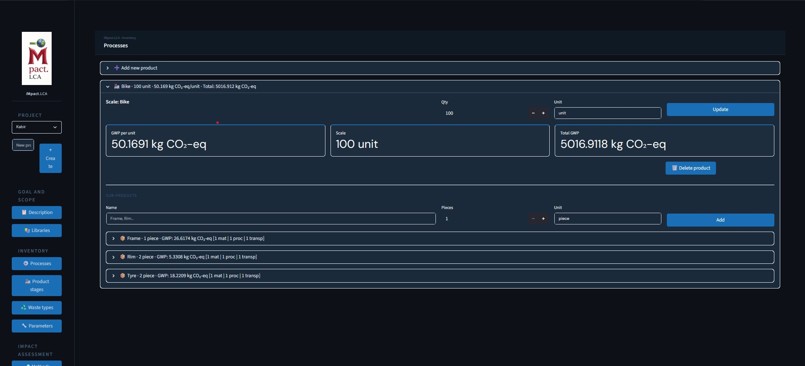

iMpact.LCA
Open-source Life Cycle Assessment software — ISO 14040/44 compliant, built for everyone
| Type | Web-based Desktop Application |
| Stack | Python, Streamlit |
| Status | Active Development — Core modules functional |
| LCI Database | 4,277 real LCI processes |
| Impact Categories | GWP, Energy, Water, Land, Acidification, Eutrophication |
| Goal | Free, accessible LCA for SMEs, startups, and students |
Overview
Life Cycle Assessment is no longer optional — the EU's CSRD and ESRS standards are making environmental impact reporting a legal requirement for businesses of all sizes. Yet today, professional LCA software costs thousands of euros per year, putting it out of reach for most SMEs, startups, researchers, and students. iMpact.LCA was built to change that.
iMpact.LCA is a web-based LCA application built in Python and Streamlit that guides users through the complete ISO 14040/14044 workflow — from Goal and Scope Definition, through Inventory Analysis with 4,277 real LCI processes, to Impact Assessment across six environmental categories, and professional report generation. It is designed to feel familiar to users of commercial LCA tools while being completely free and intuitive for anyone building a product.

iMpact.LCA Inventory module — GWP calculation for a bicycle product showing 50.17 kg CO₂-eq per unit across 4,277 LCI processes
Key Features
- Project management — create and manage multiple LCA projects with full product comparison across projects
- Inventory module — 4,277 real LCI processes covering materials, energy, transport, and manufacturing
- 6 impact categories — Global Warming Potential (GWP), Energy Demand, Water Use, Land Use, Acidification, Eutrophication
- Visualisation — flow diagrams and KPI charts for intuitive result interpretation
- Export — ISO 14040-compliant PDF reports and Excel export for professional sustainability reporting
- SimaPro-style UI — dark navy left-navigator interface modelled on industry-standard LCA tools
Current Status
Core functionality is working and stable — inventory, calculation, visualisation, PDF/Excel export, and project management are fully functional. End-of-life waste scenarios, sensitivity analysis parameters, and deeper impact customisation are in active development. Online deployment is the next major milestone, moving the tool from local to browser-accessible for global users.
Why It Matters
CSRD and ESRS compliance will require millions of European businesses to report their product environmental footprint within the next few years. iMpact.LCA gives any business or individual the tools to start that journey today — for free.